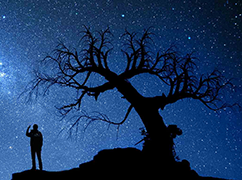

Astronomy and Constellations
We’ve always had a fascination with the stars, bright beacons of light that come alive when the sky darkens. They’ve been revered as gods, used to mark changes in the seasons, and as a way to navigate the globe. It’s difficult to trace back when exactly people started looking up and taking note of familiar patterns that were formed by these points of light, but some propose that 17,000-year-old cave paintings in Lascaux, France, depict the constellations we today know as Taurus and Orion.
Ancient cultures across the world saw these patterns in different ways, often linking them to legends that were told among their people or the local fauna and flora, or creating new myths from the shapes they saw. The constellations that make up the Zodiac — the stars that follow the ecliptic — are some of the oldest recorded, and remain essentially the same today as ancient Babylonian astronomers recorded them in the 6th century B.C.
The night sky is one aspect of our environment that everyone across the world can experience. It is a resource that humans throughout time have looked to as both a mode of navigation and a realm for the spiritual. Though the night sky at Acadia looks a little different than the night sky in the Southern Hemisphere, everyone has the access to gaze up into what lies beyond our planet. Stargazing is a great way to experience nature, explore science, and ponder history. Astronomy can be daunting for beginners, but stargazing does not have to be hard. The two keys to enjoying a gaze up into the cosmos are going out in the proper conditions and arriving prepared.